[1] 45.97677Spline Regression
Introduction
In the real world, relationships between predictors and response variables are rarely perfectly linear, quadratic, or cubic. These relationships often display different behaviors at specific regions. For example, human growth curves plotted as height vs. age. People go through multiple different growth phases in their lifetimes so plots are smooth and continuous but rates of change are continually varying, In this case, it would be impossible to capture every trend with one function. Another example is seismic data. When earthquake signals are captured, plots typically display multiple abrupt shocks broken up by periods of inactivity or smaller oscillations. One global function would also be impractical here. In our report we focus on the mcycle dataset in the MASS package. This data is from a simulated motorcycle crash experiment that measures acceleration in the rider’s head in milliseconds after impact. This data is not suitable for a linear or polynomial model because the response’s behavior is highly oscillatory and experiences multiple abrupt changes.
Instead, we can model the data using spline regression. Spline regression is a more flexible approach that is designed to capture nonlinear relationships between a predictor and a response variable. Rather than fitting a single global function, the domain of the predictor is divided into multiple smaller intervals, and a polynomial is fit within each region. These piecewise polynomials are joined at points called knots, producing a smooth overall curve that can adapt to local patterns in the data. The number and placement of knots control the flexibility of the model. Increasing the number of knots allows the model to capture more complex patterns, while fewer knots result in a smoother, more constrained fit. The degree of the polynomial used also determines the model’s overall stability and can be increased or decreased accordingly.
In this report we focus on polynomials of degree 3 and 4, as these result in the most optimal model, providing a balance between stability and flexibility. We will compare the effect of knot selection by fitting models with manually specified knots and knots selected automatically by R. We will use the bs() and ns() functions to fit multiple models in R. Our goal is to evaluate the effectiveness of spline regression in modeling nonlinear relationships by testing how polynomial degree, knot placement, and spline type impact performance. Model performance will be assessed using RMSE values, QQ plots, and residual plots.
Assumptions
In spline regression we assume the standard regression assumptions. This includes linearity in parameters. Even though the relationship between the predictor and the response is inherently nonlinear, the regression coefficients in the model must be linear. This allows least squares to be used to estimate coefficients and minimize errors. We also assume independence of errors, meaning there is no correlation between errors.
We assume constant variance, meaning errors do not increase or decrease across values of x. If the errors are autocorrelated or variance is not constant, the errors become unreliable leading to incorrect confidence intervals and estimates are less accurate. We also assume that the errors are normally distributed. This validates any confidence intervals or hypothesis tests on the model. Together, these assumptions guarantee that any variation in the model is random and unbiased. These assumptions can be verified using residual plots, histograms, and QQ plots.
In addition to the basic regression assumptions, there are assumptions specific to splines. We first assume that the relationship between the predictor and the response is smooth and continuous. Specifically, we want the function itself to be continuous as well as \(n-1\) derivatives for an \(n\)th degree polynomial. For example, a cubic spline will be continuous up to the second derivative. This assumption will produce smooth, natural-looking curves. Since piecewise polynomials are the core of spline regression, we assume that the function can be constructed by multiple polynomials that fit local observations well. This ensures that local patterns are captured without requiring a high degree polynomial which leads to instability.
We assume that the number and placement of knots is chosen appropriately. Knots have a direct influence on the flexibility of the model and determine if there is a risk of overfitting or underfitting. Additionally, at each knot, we assume that each polynomial connects seamlessly by matching function values and first derivatives. Finally, we assume that the degree of polynomial on each interval is appropriate. This ensures the model balances flexibility and stability with accuracy well.
Mathematics
Instead of fitting one polynomial globally over the entire range of x, we divide the domain into several intervals and fit different polynomials locally in distinct regions of x. This allows for a much better-fitting model because it can adapt to abrupt changes in trends in different regions rather than being restricted to an overall pattern. This is beneficial if trends are very local or fragmented where a global polynomial would not be able to fit smoothly over. Overall, accuracy and flexibility are increased.
A spline is a function of degree \(n\) on each interval divided by \(k\) knots \(\{\xi_1,...,\xi_k\}\). The first step in constructing a spline function is selecting the amount of intervals that x will be divided into. This number is determined by choosing boundaries for each interval separated by what is referred to as knots. These knots can be chosen manually, most commonly by dividing the domain into any specified number of quantiles. This ensures data is evenly distributed across intervals. For example, three knots would divide the domain at the 25th, 50th, and 75th quantile. Knots can also be placed at certain points of interest where trends are known to abruptly change. In most cases, 3-5 knots are sufficient to capture non-linear trends without too much overfitting.
Then, a polynomial of degree \(n\) is fit to the data within each sub-interval, such that:
\[f(x)= \begin{cases} P_1(x) & x < \xi_1 \\ P_2(x) & \xi_1 \leq x \leq \xi_2 \\ \vdots & \vdots \\ P_{n+1}(x) & x \geq \xi_n \end{cases}\]
However, this method usually results in a model that is fragmented at each knot because the boundary values for either function to the left or right are unrestricted and not specified. This unnatural discontinuity issue can be solved by placing constraints on each piecewise polynomial called boundary conditions. These conditions specifically apply to cubic polynomials since they allow for second-degree continuity. There are two types of conditions, natural and clamped which each have different derivative and continuity conditions. For a natural spline, it is given that:
\[\begin{align*} &f(x)^-=f(x)^+\\ &f'(x)^-=f'(x)^+\\ &f''(x)=0 \text{ at either endpoint} \end{align*}\]
For a clamped spline, it is given that:
\[\begin{align*} &f(x)^-=f(x)^+ \\ &f'(x)=c \end{align*}\]
Where \(c\) is a constant specified at the boundaries.
Natural splines are preferred because they enforce stable behavior at boundaries where data is typically sparse, and true slopes of the data are usually unknown. By imposing linear constraints at the endpoints, they reduce instability and help prevent overfitting.
But, computing these coefficients to support the boundary conditions required for a smooth, continuous fit can get complicated. So, we introduce basis functions as an alternative to multiple polynomials. The general form of a basis function is:
\[ (x-\xi_i)^n_+= \begin{cases} 0 & x\leq \xi_i \\ (x-\xi_i)^n & \xi_i<x \end{cases} \]
Where \(\xi\) is a given knot and n is the degree of the polynomial used. These basis functions are truncated which means that the function is zero up to the knot, then curves smoothly after. This causes the model to change shape only at a determined boundary. For a spline of degree d, this is modeled as: \[f(x)=\beta_0+\beta_1x+...+\beta_nx^n+\sum_{i=1}^k\gamma_i(x-\xi_i)^n\]
Where \(\beta_i\) and \(\gamma_i\) are coefficients estimated using least squares.
Essentially, the polynomial terms determine the overall global shape of the function, while the truncated basis functions allow for localized deviations in specific intervals after each knot. Although this method is mathematically equivalent to the piecewise polynomial construction, it is much more simplified because the smoothness constraints are directly met by the basis functions, avoiding the need for additional continuity calculations.
Degrees of freedom in a spline model are determined by the number of basis functions which depends on the number of knots and degree of the polynomials used. A higher number of degrees of freedom results in a more flexible model that can more closely follow the data, but may lead to overfitting. A lower degree of freedom results in a smoother curve with higher bias, which may miss important trends.
Methods
R puts this into effect with the bs() and ns() functions from the ‘splines’ package. The bs() function constructs B-splines, which are not a type of spline but rather a construction of the spline function using basis functions. The user inputs the predictor variable and the degree of the polynomials along with either the degrees of freedom or specified locations of knots. If degrees of freedom are listed, R automatically selects the location of the knots, usually based on quantiles of the predictor’s domain. Alternatively, the location of each knot can be listed, allowing the user to place them at points of interest.
The ns() function constructs natural splines which are a type of cubic spline with additional boundary conditions to ensure that the function is linear at either endpoint and continuous at the knots. The arguments for this function are the same and like the bs() function, R uses the basis functions in the construction of the spline, along with the boundary conditions, resulting in a smoother, more stable fit.
Diagnostics and Remedial Measures
There are three main issues that can arise in any spline model: underfitting or overfitting which are both caused by poor choice of polynomial degree and knot placement, and unstable boundary behavior. The flexibility and accuracy of a spline is determined by the degree of the polynomial and number and placement of knots selected. If too many knots or too high of a degree are used, the model may become too sensitive to noise in the data resulting in an overfit model. On the other hand, if too few knots or too low of a degree are used, the model may fail to capture nonlinear relationships between the predictor and the response variables resulting in underfitting. Additionally, a model may perform poorly around the boundaries of the data where observations become sparse. This can cause instability and greater errors in predictions near the boundaries in the domain, leading to overall less accuracy.
There are a couple of methods to evaluate the model’s performance. The first is to analyze residuals with a plot of residuals versus fitted values. Ideally, residuals should be randomly scattered with no clear pattern and constant variance across the fitted values (homoscedasticity), with no clear shape or pattern. This indicates that the model successfully captured the data well. A bad plot, on the other hand, may show a curved pattern or a non-constant variance (heteroskedasticity) across the fitted values. This indicates that the model failed to capture important trends in the data.
Residuals can also be assessed with a QQ plot which evaluates normality. Ideally, in a well-fitted model, residuals will follow the diagonal reference line very closely. A bad plot will show deviations such as heavy tails, or a skewed, nonlinear shape. This is likely caused by outliers and misspecified arguments.
Another easy way to measure model performance is by computing the Root Mean Squared Error for each model. RMSE measures the average difference in predicted versus actual values, making it simple to compare models with varying degrees of freedom and knot placement. A lower relative RMSE value indicates overall better performance. However, because the model’s arguments can be easily tuned to create a high performing model by minimizing the RMSE overfitting can easily become an issue, and will not guarantee the model will perform as well on new data.
This issue can be addressed with cross-validation to gauge the model’s performance on unseen data. The dataset can be split into multiple subsets where a model is repeatedly tested on a subset, and evaluated on the remaining sets. By taking the average of the RMSE values across each set, the model’s performance on new data can be estimated. This method makes it easier to select optimal knots, degrees of freedom, or polynomial degree without overfitting the model.
Finally, issues in boundary behavior of the model can be resolved by using natural splines which automatically impose constraints on the boundaries. These conditions stabilize the model near the edges of the domain, leading to overall better performance.
Strengths and Weaknesses
The primary strength of spline regression is its flexibility. Splines are able to accurately model non-linear relationships by connecting individual, local, piecewise functions. Another major strength is local control. Since the model is constructed with piecewise polynomials, changes in one region of the data only affects that specific area, which reduces the impact of outliers.
Another advantage is a smooth and natural-looking model. This is accomplished with continuity constraints at each boundary, so each polynomial fits seamlessly. Splines can also easily be tuned. Different numbers and placements of knots as well as degree of polynomials directly control the model’s flexibility, stability, and accuracy. Spline regression is also easily implemented in R with simple built in functions.
However, spline regression has a few disadvantages. Because the model can be easily tuned with knots and polynomial degree, the model can be sensitive to choices of each and results can be significantly impacted. Incorrect knot placement or too few risks an underfit model that fails to capture real trends. On the other hand, too many knots will cause the model to be overfit and capture noise in the data rather than underlying trends. The risks are similar with too low or too high degree of polynomial so appropriate parameter selection is important. Splines are also sensitive to sparse data, this can be problematic near boundaries or knots. In addition, splines are computationally complex compared to linear regression. This complexity increases directly with the number of knots and polynomial degree.
As mentioned previously, the primary use of spline regression is to handle complex, nonlinear relationships between the predictor and response variable. In this case linear models are not applicable. Polynomials may fit the data well, but they are often more unstable. In order to capture every local trend accurately, a high degree is required. But, this usually results in a model with high oscillations and poor behavior at boundaries. This problem can be resolved with splines because they focus on fitting to local rather than global patterns. Spline models can provide more accuracy than a high degree polynomial model with far less instability and variance.
The Dataset
Note that the RMSE value for each model fit is displayed above the corresponding plot.
Linear regression Model:
`geom_smooth()` using formula = 'y ~ x'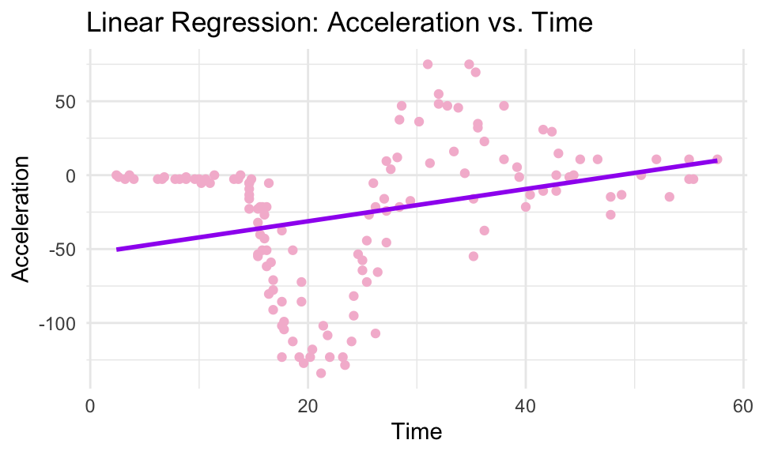
Clearly, the data has a nonlinear relationship, which the linear model fails to capture.
Polynomial Regression Model:
polymod = lm(accel ~ poly(times, 4), data = mcycle)
times_lims = range(mcycle$times)
times_grid = seq(from=times_lims[1],to=times_lims[2])
pred = predict(polymod, newdata = list(times = times_grid), se = T)
plot_data <- data.frame(
times = times_grid,
cyc_pred = pred$fit,
lower = pred$fit - 2 * pred$se.fit,
upper = pred$fit + 2 * pred$se.fit)
RMSE=sqrt(mean(residuals(polymod)^2))
print(RMSE)[1] 39.39187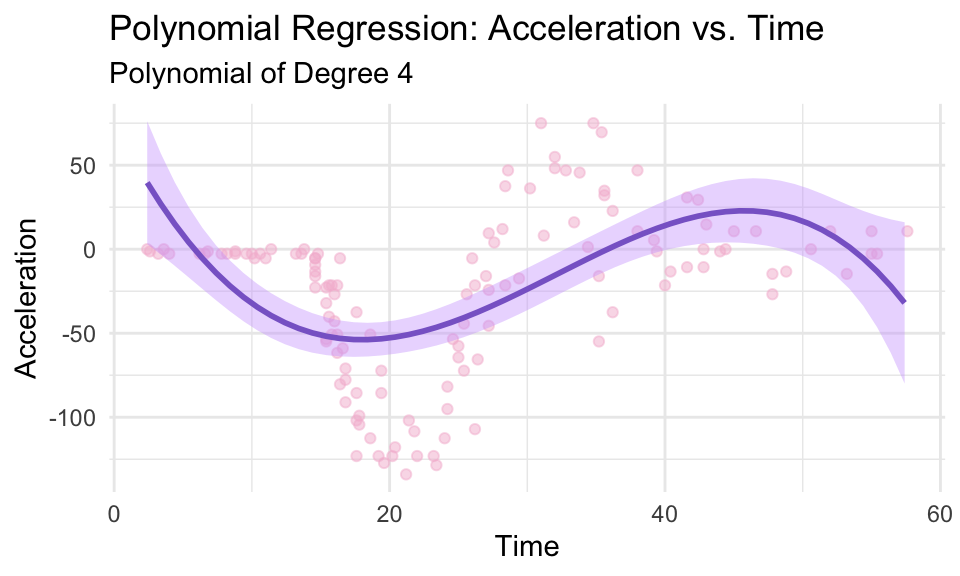
A polynomial model fits slightly better than the linear model but is still too generalized. The trends are heavily smoothed over.
BS() With Knots at the Quartiles and Degree 3:
# Cubic Spline (Quartiles) (Model 2)
cubicmod = lm(accel ~ bs(times, df = 6, degree = 3), data = mcycle)
times_lims = range(mcycle$times)
times_grid = seq(from=times_lims[1],to=times_lims[2])
pred = predict(cubicmod, newdata = list(times = times_grid), se = T)
plot_data <- data.frame(
times = times_grid,
cyc_pred = pred$fit,
lower = pred$fit - 2 * pred$se.fit,
upper = pred$fit + 2 * pred$se.fit)
RMSE=sqrt(mean(residuals(cubicmod)^2))
print(RMSE)[1] 30.50603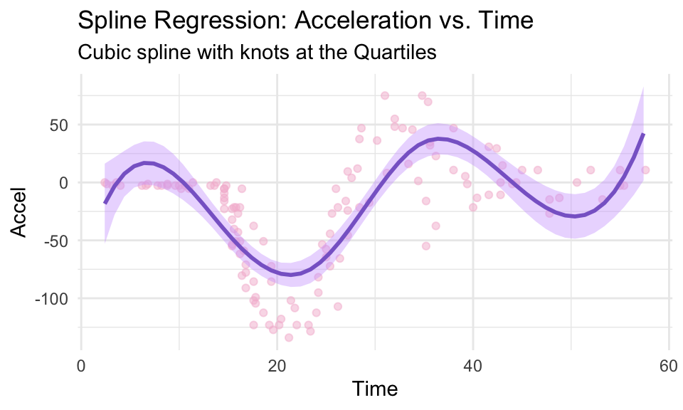
The cubic spline captures the overall trend of the data, but appears too smooth around the 20-40 millisecond interval where the data forms an extreme trough.
BS() With Knots at the Quartiles and Degree 4:
modd4 = lm(accel ~ bs(times, df = 7, degree = 4), data = mcycle)
times_lims = range(mcycle$times)
times_grid = seq(from=times_lims[1],to=times_lims[2])
pred = predict(modd4, newdata = list(times = times_grid), se = T)
plot_data <- data.frame(
times = times_grid,
cyc_pred = pred$fit,
lower = pred$fit - 2 * pred$se.fit,
upper = pred$fit + 2 * pred$se.fit)
RMSE=sqrt(mean(residuals(modd4)^2))
print(RMSE)[1] 23.73613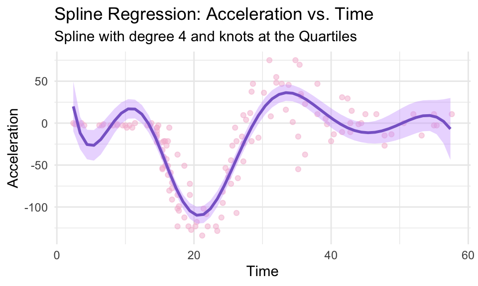
The spline of degree 4 seems to fully capture the nonlinear and oscillatory behavior. However, its behavior at the endpoints is very unstable.
BS() With Custom Knots and Degree 3:
cubicmod2 = lm(accel ~ bs(times, knots = customknots, degree = 3), data = mcycle)
times_lims = range(mcycle$times)
times_grid = seq(from=times_lims[1],to=times_lims[2])
pred = predict(cubicmod2, newdata = list(times = times_grid), se = T)
plot_data <- data.frame(
times = times_grid,
cyc_pred = pred$fit,
lower = pred$fit - 2 * pred$se.fit,
upper = pred$fit + 2 * pred$se.fit)
RMSE=sqrt(mean(residuals(cubicmod2)^2))
print(RMSE)[1] 23.36944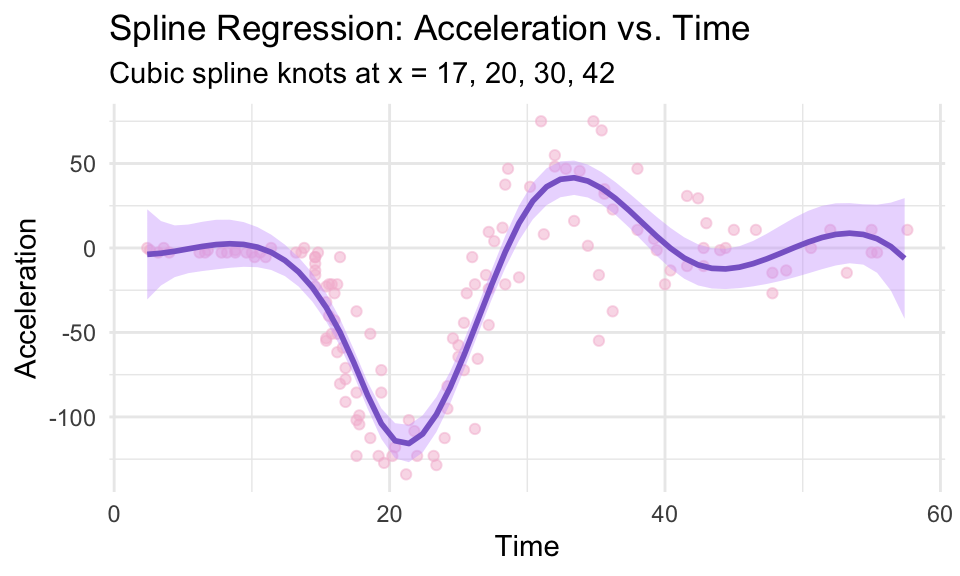
Implementing custom knots at the points of interest with cubic polynomials produced a well-fitting model. The RMSE value is slightly lower than that of the degree 4 model with knots at the quartiles. The behavior at the endpoints is captured more accurately.
BS() With Custom Knots and Degree 4:
modd4.2 = lm(accel ~ bs(times, knots = customknots, degree = 4), data = mcycle)
times_lims = range(mcycle$times)
times_grid = seq(from=times_lims[1],to=times_lims[2])
pred = predict(modd4.2, newdata = list(times = times_grid), se = T)
plot_data <- data.frame(
times = times_grid,
cyc_pred = pred$fit,
lower = pred$fit - 2 * pred$se.fit,
upper = pred$fit + 2 * pred$se.fit)
RMSE=sqrt(mean(residuals(modd4.2)^2))
print(RMSE)[1] 24.55206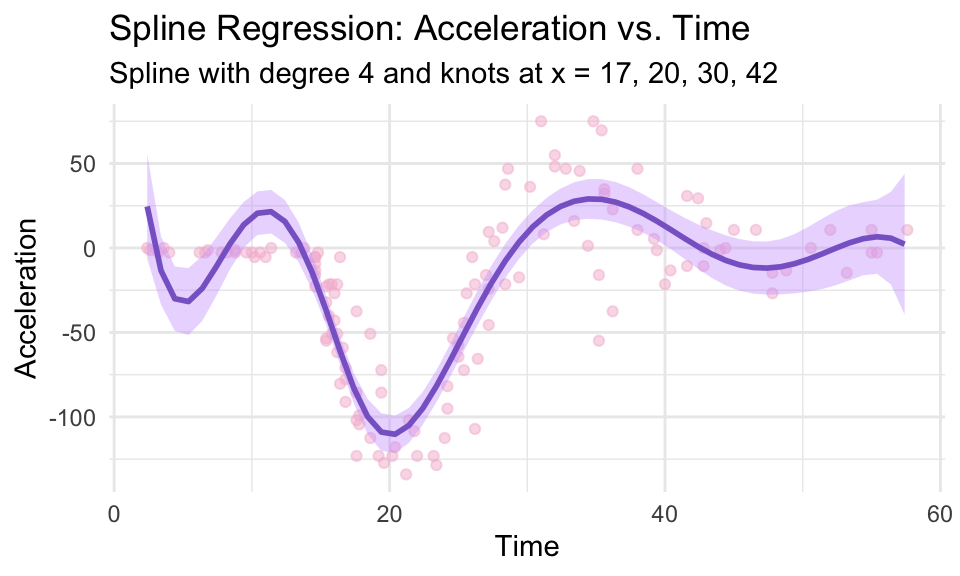
A spline of degree 4 with custom knots fits the data fairly well, but is far too curved in the 0-15 millisecond interval. The beginning behavior unstable and does not capture the trend.
NS() With Custom Knots:
natmod = lm(accel ~ ns(times, knots = customknots), data = mcycle)
times_lims = range(mcycle$times)
times_grid = seq(from=times_lims[1],to=times_lims[2])
pred = predict(natmod, newdata = list(times = times_grid), se = T)
plot_data <- data.frame(
times = times_grid,
cyc_pred = pred$fit,
lower = pred$fit - 2 * pred$se.fit,
upper = pred$fit + 2 * pred$se.fit)
RMSE=sqrt(mean(residuals(natmod)^2))
print(RMSE)[1] 23.74265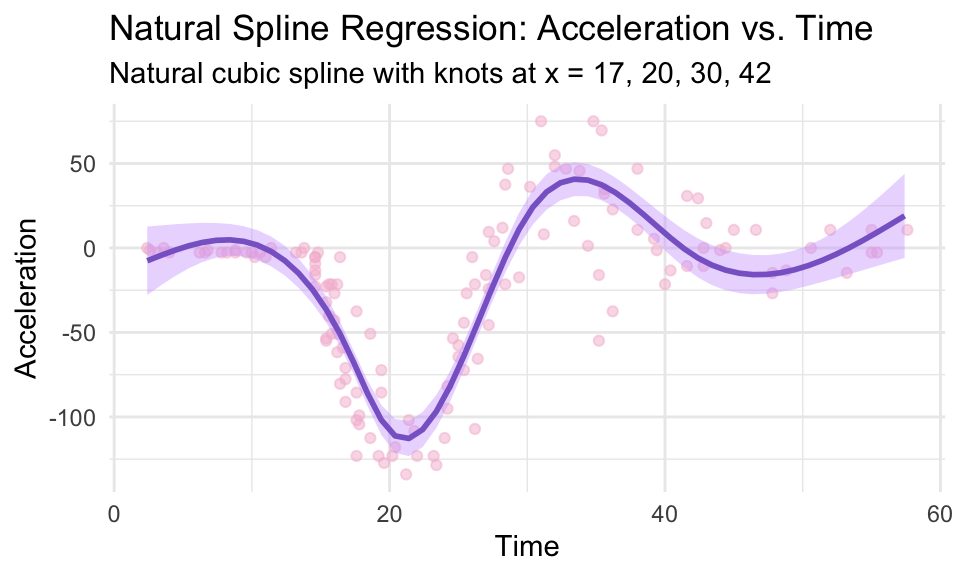
The natural spline, with cubic polynomials, gives a model very similar to that of the degree 4 spline with knots at the quartiles. But, the behavior at the endpoints is controlled and fits the data much better.
Diagnostic Plots For BS() with Knots at the Quartiles and Degree 3
`geom_smooth()` using method = 'loess' and formula = 'y ~ x'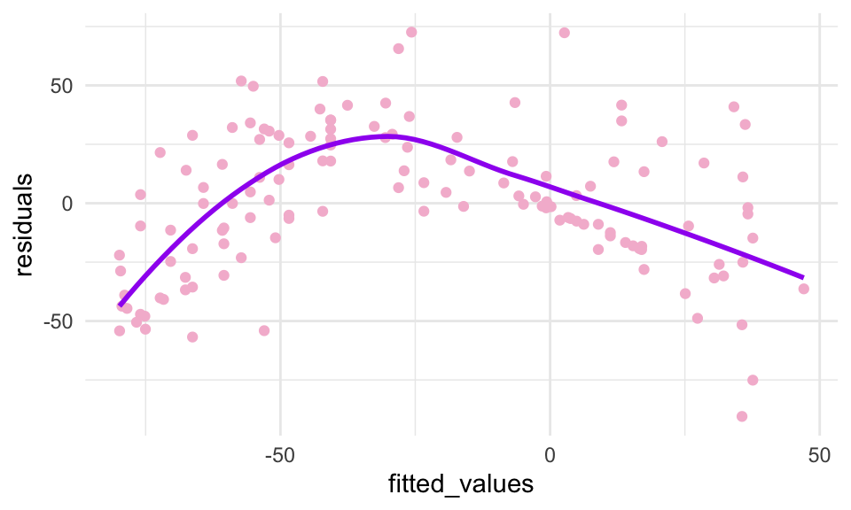
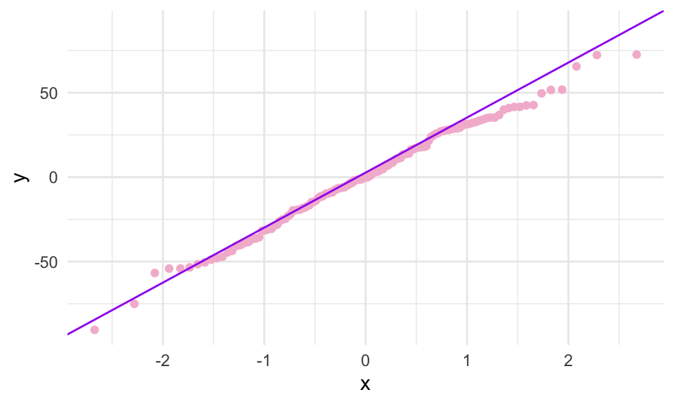
This is a poor residual plot because it shows a nonzero trend. The QQ plot is also not ideal because it shows significant deviation at the tails, specifically, the right tail.
Diagnostic Plots For BS() with Custom Knots and Degree 3
`geom_smooth()` using method = 'loess' and formula = 'y ~ x'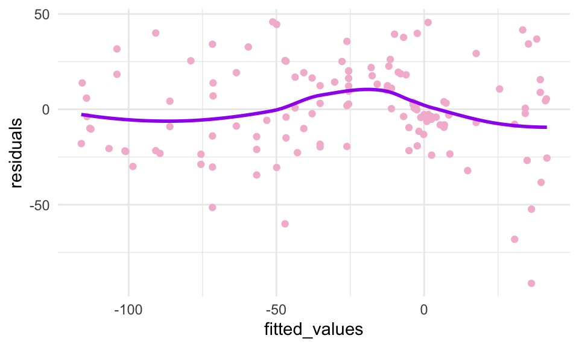
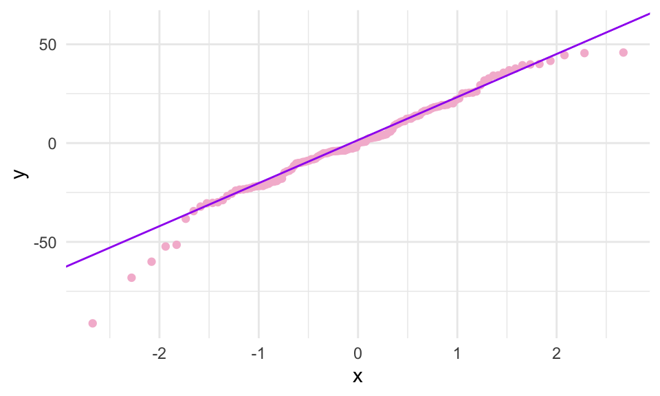
This residual plot is significantly better. The residuals are more clustered around zero, and the trend is close to linear. This QQ plot is also much improved, the deviations in the tails are less significant.
Overall, the optimal model seems to be fit with custom knots at points of interest and cubic polynomials. This spline captures every trend in the data and appears to balance stability and flexibility well. The RMSE value is the lowest of all the models fit, and the residual and qq plots are ideal.